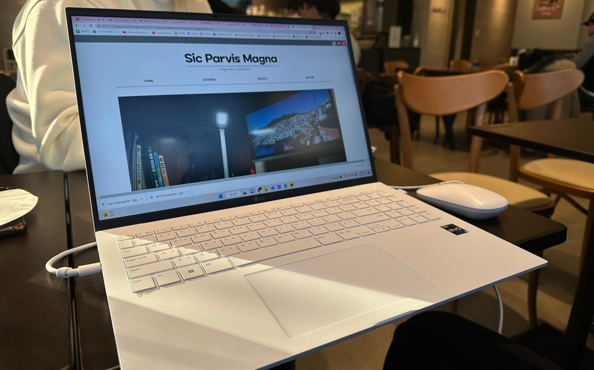
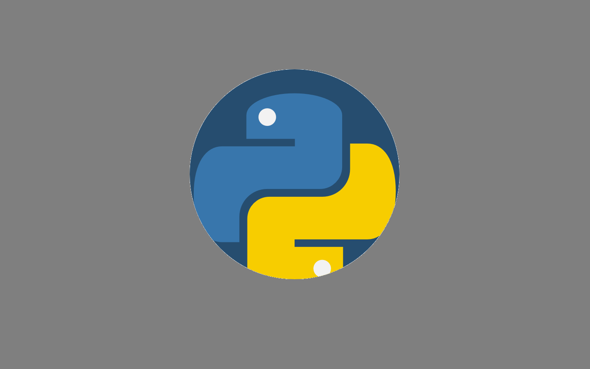

여태껏 이루어 낸 것들, 쌓아 놓은 것들을 게시합니다.

각종 WEB강좌들을 보며 나 자신을 소개하는 페이지를 만들자! 라고 생각하며 시작했습니다.
뚜렷하게 나타나는 결과물로 인해 자신감도 점점 상승했지만, 내가 원하는 것을 만들기 위해서, 내 의도를 정확하게 구현해내기 위해서
상당히 많은 노력이 필요했습니다. 또한, '왜 이게 안될까?' 라는 질문과 고민을 거듭하며 코딩 실력이 한 단계 올라간 느낌이라 즐겁기도 하였습니다.
무엇보다, '나 자신'에 대한 소재였기에 만들면서 한 번도 지루하다는 생각이 들지 않았습니다. 정말 재미있게 한 것 같습니다.
GITHUB : https://github.com/DeltaFrog1407/makingmypage
PRACTICE : https://github.com/DeltaFrog1407/webpractice

프로그래밍을 해보자! 라는 생각으로 무작정 달려든 파이썬입니다.
예전 교양수업을 통해 C++는 잠깐 해 본 적이 있었기에, 다른 언어를 써 보고 싶었던 도중 발견한 것이 파이썬이었습니다.
기초부터 쌓아보려는 생각에 서점에 가서 무작정 책을 몇 권 샀고, 무작정 따라했습니다. 변수도 배우고, 조건문도 배우고, 클래스도 배우고...
책 한권을 다 했지만 막상 와닿는 것은 없었습니다. '이걸 어떻게 써먹지?'라는 생각과 함께 pygame 모듈을 사용하는 게임 제작으로 눈을 돌렸습니다. 눈에 보이는 결과물만큼 효과적인 동기부여는
없다고 생각했기 때문이었습니다.
이번엔 달랐습니다. 무작정 따라하기보단 원리를 이해하며 코드를 썼고, 미리 짜여져 있는 코드를 볼 때에도 제작자의 의도를 파악하려 노력했습니다.
그렇게 많은 게임을 만들었습니다.
제게 남은 것은 약간의 절망감, 그리고 그 속에서 빛나는 비전과 자신감이었습니다. '나는 아직 모르는 게 많구나, 그런데 이 정도 알면 뭔갈 만들 수 있지 않을까?'
라는 생각을 안고서, 저는 더이상 따라하는 것이 아닌, 제가 직접 주도하는 게임을 만들어 봐야겠다고 생각하고 있습니다.
GITHUB : https://github.com/DeltaFrog1407/pythonpractice
CONTACTS
- E-MAIL : wsw1407@naver.com
- KakaoTalk : https://open.kakao.com/o/syE9jtXe>
- Instagram : @delt4fr0g